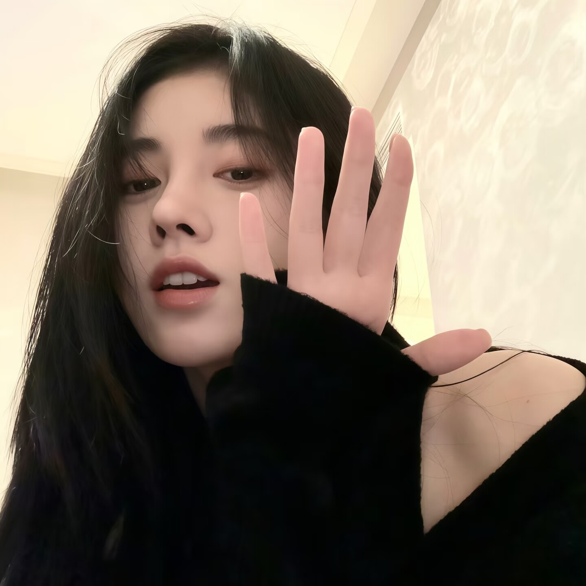

音乐与追星
听歌口味很杂，喜欢鞠婧祎、周深等等等等。音乐是日常背景音，也是心情开关。

RRT's PROFILE
还活着太好了。
大家好！我是唐冉，网名 RRT冉 / 檀戎，一个「会呼吸」的人。
2010 年 3 月 3 日出生在辽宁大连，现在是大连市第五中学的高二学生，双鱼座，16 岁。性格嘛，会呼吸。
喜欢音乐、动漫、阅读、摄影、绘画和美食，也喜欢刷抖音、追星。最擅长的技能是——睡觉。
近况：活着。还活着真棒。
“还活着太好了。”
听歌口味很杂，喜欢鞠婧祎、周深等等等等。音乐是日常背景音，也是心情开关。
喜欢动漫，也喜欢阅读。刷抖音和追星也是生活的一部分，快乐来源很丰富。
喜欢摄影和绘画，用镜头和画笔记录看到的世界。好看的东西值得留下来。
咸的甜的好吃的都喜欢；胡萝卜和肥肉不行。最擅长的技能是睡觉，含金量很高。
写作业、发呆、走路的时候都可能戴着耳机。歌单很杂，心情不同听的也不一样。
刷抖音、看动漫、追星，偶尔一拍脑袋想拍照或者画画，然后继续睡觉。
从出生到现在，大概就是一条「会呼吸、会睡觉、顺便长大」的时间线。没什么惊天动地的大事，但每一段都还算有意思。
2010 年 3 月 3 日，我出生在辽宁大连。那天是春天，具体天气没人跟我详细说过；反正从那天起，我成了双鱼座，也成了家里的「会呼吸的小孩」。
小时候的我很好养活：有好吃的就开心，有好听的歌就跟着哼，困了就睡。
小学时认真学过一阵珠心算，拿过大连珠心算「二位数组看心算 / 听心算」双第一。现在算数不一定快，但那段每天拨算盘的日子还挺难忘。
音乐、动漫、阅读、摄影、绘画和美食慢慢变成了日常。歌单越来越杂，喜欢鞠婧祎、周深，也开始刷抖音、追星，偶尔拿起相机或画笔记录一下。
现在在大连市第五中学读高二，16 岁。日常是上课、写作业、听歌、看动漫，偶尔思考人生，更多时候思考晚饭吃什么。还活着，真棒。
每天的主线任务是睡觉，副线是听歌、刷抖音、追星，以及想一个长期没有答案的问题：为什么我家没矿。
时间线还会继续往后长。小目标很简单：好好活着，多睡一会儿，多吃点好吃的。
这里是唐冉的好友主页，由WZA为其制作；个人信息由唐冉本人填写，联系方式仅用于朋友联系，切勿骚扰！